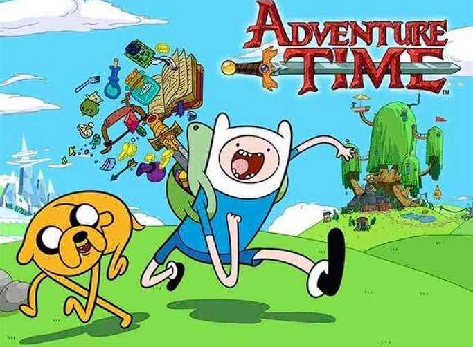
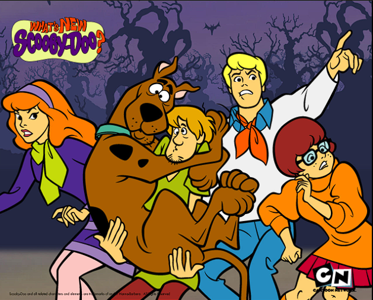
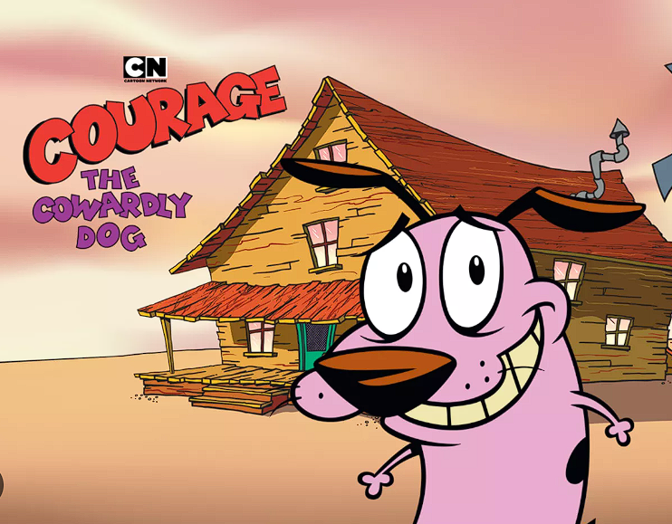

Hora de Aventura
Hora de Aventura es una serie de televisión animada estadounidense creada por Pendleton Ward para Cartoon Network. La serie sigue las aventuras de Finn, un niño humano, y su mejor amigo y hermano adoptivo Jake, un perro con poderes mágicos para cambiar de forma y tamaño a voluntad. Finn y Jake viven en la Tierra de Ooo, un mundo lleno de personajes coloridos, y se embarcan en aventuras surrealistas para salvar a las princesas de la Tierra de Ooo de villanos malvados.

Scooby Doo
Scooby-Doo es una franquicia de medios estadounidense que sigue las aventuras de un grupo de adolescentes y su perro gran danés llamado Scooby-Doo, que viajan por el país en la furgoneta de la misterios S.A. resolviendo misterios involucrando supuestos encuentros paranormales.

Coraje el perro cobarde
Coraje, el perro cobarde es una serie de televisión animada estadounidense creada por John R. Dilworth para Cartoon Network. La serie sigue las aventuras de Coraje, un perro tímido y asustadizo que vive en una granja con sus dueños, Muriel y Justo, y se embarca en aventuras surrealistas para salvar a Muriel de monstruos y villanos.
